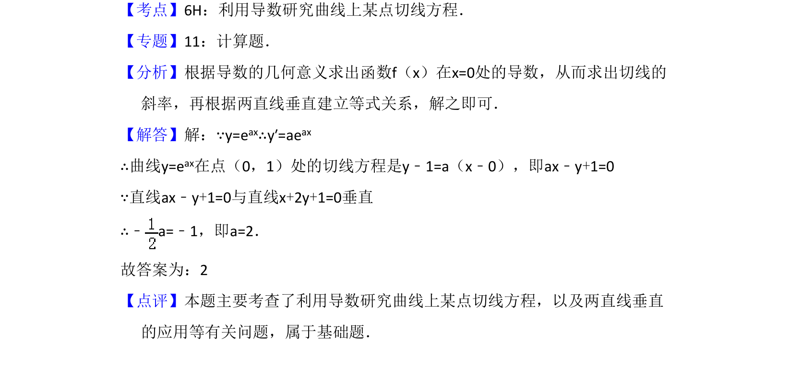

考点：利用导数研究曲线上某点切线方程 两直线垂直
求曲线切线方程，并利用两直线垂直条件求参数值。

📄 原 PDF 第 9 页：
素材/真题/吉林/2008-2024·（吉林）数学高考真题/2008年高考数学试卷（理）（全国卷Ⅱ）（解析卷）.pdf
14．（5分）设曲线y=eax在点（0，1）处的切线与直线x+2y+1=0垂直，则a= 2 ．
【考点】6H：利用导数研究曲线上某点切线方程．菁优网版权所有 【专题】11：计算题． 【分析】根据导数的几何意义求出函数f（x）在x=0处的导数，从而求出切线的 斜率，再根据两直线垂直建立等式关系，解之即可． 【解答】解：∵y=eax∴y′=aeax ∴曲线y=eax在点（0，1）处的切线方程是y﹣1=a（x﹣0），即ax﹣y+1=0 ∵直线ax﹣y+1=0与直线x+2y+1=0垂直 ∴﹣a=﹣1，即a=2． 故答案为：2 【点评】本题主要考查了利用导数研究曲线上某点切线方程，以及两直线垂直 的应用等有关问题，属于基础题．